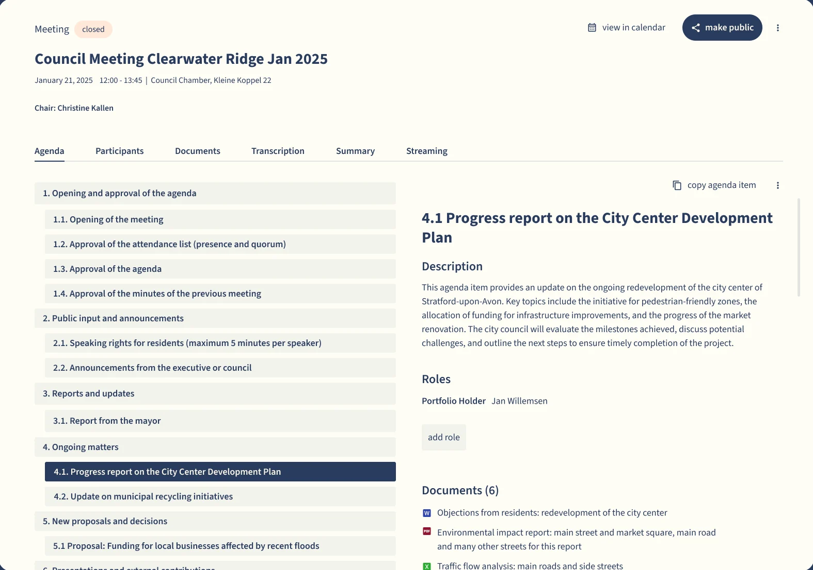

Every council decision, from idea to archive
Council and committee management for Canadian municipalities. Reports, approvals, agendas, meetings, minutes and webcasts stay together in one file.
Follow your Council meeting from the first idea to the archive
Council work usually moves through a patchwork of separate tools. Here every step of the decision stays in one file.
Council,
Book a demo for this meetingSample municipality and sample items. Notice periods and retention are set by your province and your own bylaws, and Qualigraf follows them. Ask how it fits your procedure bylaw.
See the platform the way your clerks will
Screens from Qualigraf’s own demo municipality, Clearwater Ridge. Sample data throughout.



Over 400 clients across Europe already decide this way
Municipalities in the Netherlands and France run their decisions on Qualigraf today. These are frontrunners you can learn from.
 Netherlands
Netherlands Netherlands
Netherlands Netherlands
Netherlands France
France France
France
Made for each country’s rulesThe platform is tailored to the democratic demands of every country it serves.
A Canadian teamSales, implementation and support for Canada are run from Oshawa, Ontario.
One platformMeetings, workflow, council information, the long term planner and publishing together. Council information is also available on its own.
Certified, audited and accounted for
Every step of a decision is logged, who changed what and when, and the platform is independently certified.


- ISO 27001Information security, independently certified
- ISO 9001Quality management, independently certified
- A built in audit trailEvery change and every approval on the record
Talk to the team in Oshawa
Qualigraf Canada is part of a group with local teams in the UK, France and the Netherlands.

Let’s explore together how Qualigraf can modernize, simplify and bring more transparency to your council’s decisions. 416 738 6366
Bring your busiest meeting. We’ll run it on Qualigraf
A demo built around your own Council meeting on , with your agenda, your approvals and your council.
Or call Blair on 416 738 6366